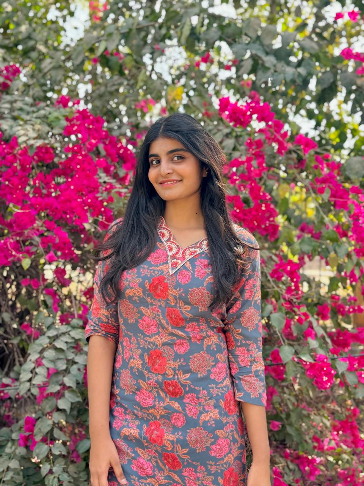

Charvi Sri Sravanam

My Online Resume
About Myself
I'm a 3rd year B-tech student in IIIT Vadodara,Gandhinagar,Gujarat.
Summary
I am a passionate learner with a strong interest in Machine Learning and Full Stack Web Development.
Currently exploring frontend and backend technologies to become a Full Stack Developer,
while also building a foundation in Machine Learning to apply intelligent solutions in real-world projects.
Eager to grow through hands-on projects and continuous learning.
Education
- Currently pursing by degree in BTech - Computer Science Engineering
- My college situated in IIIT Vadodara, Gandhinagar, Gujarat
- I did my high school graduation in Indian School Drsait, Muscat,Oman
Work Experience
- Web Development Intern – Self-Initiated Project (Remote)
Jan 2024 – Apr 2024
Developed a Sales Management System using HTML, CSS, Python (Flask), and MySQL. Handled both frontend and backend development and deployed on local server for demonstration.
- Machine Learning Enthusiast – Personal Learning Projects
Ongoing
Completed beginner-level projects like image classification and data analysis using Python, Pandas, and Scikit-learn. Currently learning model training and evaluation.
Certifications
Certificate-1 : OCI AI foundations associate
Certificate-2 : OCI foundations associate
Certificate-3 : Java development
Certificate-4 : Network Security
Skills
- Good understanding of Python, studied for 2 years in high school
- Basic knowledge of SQL and database concepts
- Familiar with C and Java programming languages
- Learning Data Structures and Algorithms using C++
- Basic understanding of Artificial Intelligence concepts
- Learning Web Development using HTML and CSS
- Introduction to Network Security principles
- Studied fundamentals of DBMS in coursework
Other:
© Charvi Sri. All rights reserved.